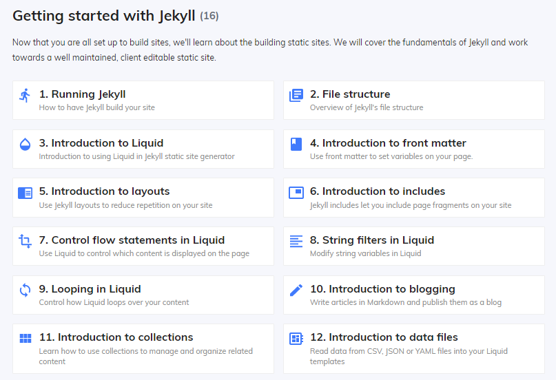
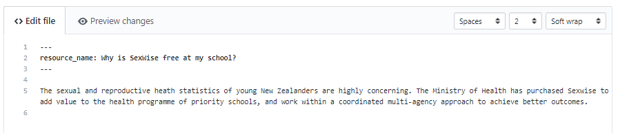

Going off the original THETA website there were about 4 different page layouts. I built the 4 page layouts in HTML & CSS and was then able to use Jekyll to allocate the layouts to specific pages.
In the process of looking up Jekyll tutorials I stumbled across CloudCannon, who happen to be a Dunedin based Jekyll CMS. They also have an array of useful Jekyll tutorials which helped me a lot to get the site up and running.

I found this tutorial particularly useful for setting up the page layouts.
After setting up the page layouts I was able to start adding in some of the content to each page. I thought that using markdown to do so made this process a lot more straight forward as I wasn’t having to awkwardly add text in between code as I would have done if I added the text to an HTML file.
Pictured below is how the MarkDown file is structured.
The top section, known as the front matter contains page variables such as page name and description while the second section below the three dashes contains the main content of the page.
